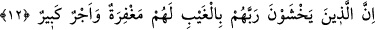
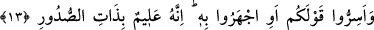
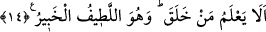

HİÇ YARATAN BİLMEZ Mİ?
12. Fakat daha görmeden Rablerinden (azâbından) korkanlara gelince, onlar için
gerçekten hem bağışlanma hem de büyük mükâfat vardır.
13. Sözünüzü ister gizleyin, ister açığa vurun; bilin ki O, kalplerin içindekini
bilmektedir.
14. Hiç yaratan bilmez mi? O, en ince işleri görüp bilmektedir ve her şeyden
haberdardır.
“Fakat daha görmeden Rablerinden korkanlara” yâni Rablerinin azâbından
korkanlara “gelince…” Bu azap kıyâmet gününün, ölüm gününün ve kabir gününün
azâbıdır. Bu azâbın gayb olması, şu an için gözlerinin göremeyeceği, kendilerinden gaib
olan bir azap olması sebebiyledir. Onlar henüz bu azapları gözleriyle görebilmiş
değillerdir. Âyeti bu şekilde tefsir etmek; yâni azâbın şu anda gözle görülen bir azap
olmadığını söylemek mümkündür.
Bunun yanında âyeti “fakat daha Allah Teâlâ’dan uzak olarak; yâni O’nun azâbını ve
âhiret ahkâmını görmemiş olarak Rablerinden korkanlara gelince…” şeklinde ikinci bir
şekilde tefsir etmek de mümkündür.
Bir üçüncü şık olarak “fakat insanların gözlerinden uzak bir biçimde Rablerinden
korkanlara gelince şeklinde” tefsir etmek de muhtemeldir. İnsanlardan uzak olmaları,
münâfıklar gibi olmamalarındandır. Çünkü münâfıklar müminlerle karşı karşıya
geldiklerinde “Biz îman ettik derler. Şeytanlarıyla başbaşa kaldıklarında ise: Biz
sizinle beraberiz, biz onlarla sâdece alay ediyoruz derler.” (el-Bakara, 2/14) Ya da
bir başka tefsir biçimi olarak “kendilerine gizli olan şeyleriyle yâni kalpleriyle
korkarlar” diye anlamak da mümkündür. Bu son takdirde “ba” harfi istiâne için olup
“yahşevne: korkarlar” fiiline bağlıdır.
Rivâyet olunduğuna göre Hz. Ebû Bekir Sıddık (r.a.)’ın ağzından insanlar, Allah’tan
şiddetli biçimde korktuğundan dolayı, kızarmış ciğer kokusu alırlardı. Peygamber
Efendimiz (s.a.) de namaz kılarken göğsünden -tencerenin içinde suyun kaynaması
esnâsında çıkardığı su sesi gibi- inleme sesi duyulurdu.[14]
“Onlar için gerçekten hem” bir “bağışlanma ve hem de büyük bir mükâfat vardır.”
Bu bağışlanma işledikleri bütün günahlara karşılıktır. Sevinç ve sürûrun kaynağı
“verme” olduğu için Allah Teâlâ bu âyet-i kerîmede “onlar için büyük mükâfât vardır”